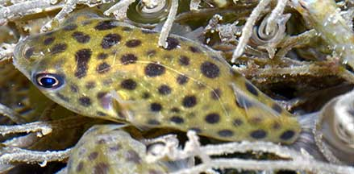

|
|
| fishes text index | photo index |
| Phylum Chordata > Subphylum Vertebrata > fishes > Family Tetraodontidae |
| Spotted
green pufferfish Tetraodon nigroviridis Family Tetraodontidae updated Nov 2020 Where seen? The tiny globular spotted juvenile is sometimes seen in our mangroves, especially when high spring tides reach the back mangroves. Also seen on other shores near freshwater sources (e.g., canals) among seaweeds. Elsewhere, found in freshwater streams and brackish coastal areas including estuaries, alone or in small groups. Features: Those seen 3-6cm, grows to about 14cm. Smooth, globular. Adult has a green back with black spots, tail fin with dark bars. Tiny juveniles usually golden yellow with black spots of various sizes and translucent fins. |
 Sungei Buloh Wetland Reserve, Feb 05 |
 East Coast-Marina Bay, Oct 15 Photo shared by Loh Kok Sheng on flickr. |
| What does it eat? It eats molluscs,
crustaceans and other invertebrates as well as some plants. Human uses: These fishes are sometimes taken for the live aquarium trade, although they can be aggressive towards tankmates and are not recommended for home aquariums. It is said that they may eat the scales and fins of other fishes. They are also used as bait. |
| Spotted green pufferfishes in Singapore |
On wildsingapore
flickr
|
| Other sightings on Singapore shores |
| Spotted green pufferfish (Tetraodon nigroviridis) at Marina East from Loh Kok Sheng on Vimeo. |
| Sungei Buloh
Wetland Reserve, Apr 11 leopard-spotted puffer fish @ sg buloh 10Apr2011 from SgBeachBum on Vimeo. |
Links
References
|